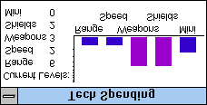

La fenêtre des dépenses en technologie

La fenêtre des dépenses en technologie sert à montrer les technologies que vous voulez développer en priorité. Vous pouvez choisir de rechercher des technologies différentes selon votre stratégie, votre philosophie et la situation de la partie. La plupart du temps, vous n’avez pas besoin de trop vous occuper de cette fenêtre. Une fois que vous avez décidé comment dépenser votre argent de recherche, vous pouvez la laisser répartir l’argent dans les mêmes proportions pour le reste de la partie. Ou vous pouvez la modifier.
N’oubliez pas que la fenêtre des dépenses en technologie ne fait que répartir l’argent de la technologie, et ne décide pas de son montant : celui-ci est décidé dans la fenêtre du budget.
Notez que les repères à gauche du graphique en barres des dépenses en technologie ne sont pas régulièrement espacés. Chaque repère représente 10 %, mais ils sont affichés de façon logarithmique pour vous permettre plus de précision dans la répartition de vos dépenses en technologie.
Traduction française du remake, non officielle, du manuel de Delta Tao. La page en anglais (en anglais).